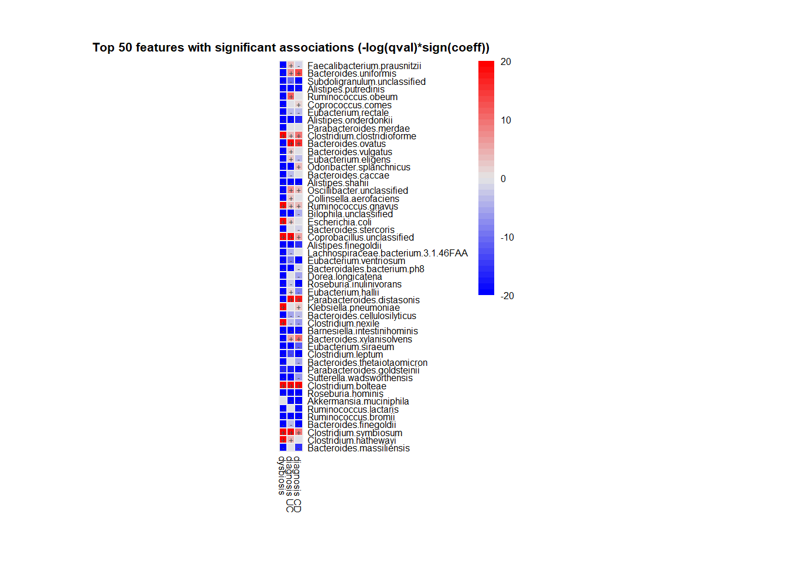
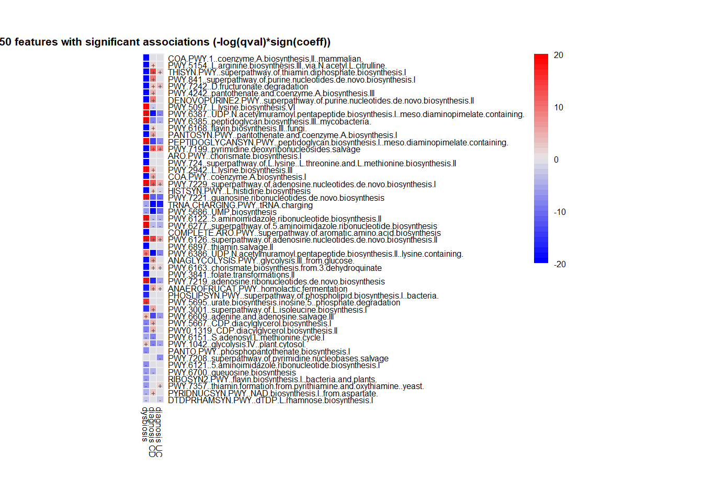

Multivariable regression of microbiome and IBD using MaAsLin2 R package
David Xin Zhao
Last edited 16 November 2022
knit: (function(input_file, encoding) { out_dir <- ‘docs’; rmarkdown::render(input_file, encoding=encoding, output_file=file.path(dirname(input_file), out_dir, ‘index.html’))})
MaAsLin2
MaAsLin2 is to efficiently determine multivariable association between phenotypes, environments, exposures, covariates and microbial meta-omics features.
Install MaAsLin2 with Bioconductor
# if(!requireNamespace("BiocManager", quietly = TRUE))
# install.packages("BiocManager")
# BiocManager::install("Maaslin2")
library(Maaslin2)
library(tidyverse)Multiple regression of microbiome and clincial covariates of interest
Load data sets (use example datasets provided by MaAsLin2 package)
# microbiome abundance data
df_input_data <- read.table(file = input_data,
header = TRUE,
sep = "\t",
row.names = 1,
stringsAsFactors = FALSE)
# meta data
df_input_metadata <- read.table(file=input_metadata,
header = T,
sep="\t",
row.names = 1,
stringsAsFactors = F)
# pathway data
df_input_path <- data.frame(read.csv("./pathabundance_relab.tsv",
sep = "\t",
stringsAsFactors = F,
row.names = 1))Fit mutiple linear regression model on microbiome data
The following command runs MaAsLin2 on the HMP2 data, running a multivariable regression model to test for the association between microbial species abundance versus IBD diagnosis and dysbiosis scores.
fit_data2 <- Maaslin2(
input_data = df_input_data,
input_metadata = df_input_metadata,
min_prevalence = 0, #without additional filtering
normalization = "NONE", #without additional normalization
output = "demo_output2",
fixed_effects = c("diagnosis", "dysbiosis"), #set diagnosis and dysbiosis as fixed effect variables
reference = c("diagnosis,nonIBD")) #set the baseline for the categorical variable, diagnosis
## Warning in xtfrm.data.frame(x): cannot xtfrm data frames
all_results <- fit_data2$results #extract coefficients and q-valueEvaluate significant genus based on model parameters
significant associations is provided in ‘significant_results.tsv’
sig_results <- all_results %>%
filter(qval <= 0.05) %>% #sig threshold
arrange(qval)
head(sig_results, 5) #view first rows ## feature metadata value coef stderr pval name qval N
## 1 Faecalibacterium.prausnitzii dysbiosis dysbiosis -2.647940 0.07465408 1.544980e-203 dysbiosis 4.032398e-201 1595
## 2 Bacteroides.uniformis dysbiosis dysbiosis -3.503693 0.11995326 1.589498e-150 dysbiosis 2.074294e-148 1595
## 3 Subdoligranulum.unclassified dysbiosis dysbiosis -1.525402 0.06188741 6.962634e-114 dysbiosis 6.057492e-112 1595
## 4 Alistipes.putredinis dysbiosis dysbiosis -3.444523 0.14190247 5.443288e-111 dysbiosis 3.551745e-109 1595
## 5 Ruminococcus.obeum dysbiosis dysbiosis -1.946980 0.08362614 2.023721e-103 dysbiosis 1.056382e-101 1595
## N.not.zero
## 1 1534
## 2 1391
## 3 1546
## 4 940
## 5 1346Fit multivariable regression models on functional data
Authors tend to work with CPM units because we find them to be more convenient, but they are numerically equivalent to relative abundances for modeling purposes (CPM = RA * 1e6)
Quick tips for using MaAsLin2 on functional profiles: 1.To reduce the number of features, you typically want to run either the unstratified functional features ( or a filtered subset of the stratified features) 2.You may also want to remove functional features that are highly correlated to one specific taxon (i.e. likely contributed by that microbe), since these can be better-explained by taxonomic changes
#This can also be done with with the HUMAnN 3 untiliy `humann_split_stratified_table`
unstrat_pathways <-function(dat_path){
temp = dat_path[!grepl("\\|",rownames(dat_path)),]
return(temp)
}
df_input_path = unstrat_pathways(df_input_path)Run the same model as above on the MetaCyc pathway table generated from the bioBakery workflows.
# fit the model on pathway (functional) data - it takes a few minutes
fit_func <- Maaslin2(
input_data = df_input_path,
input_metadata = df_input_metadata,
output = "demo_functional",
fixed_effects = c("diagnosis", "dysbiosis"),
reference=c("diagnosis,nonIBD"),
min_abundance = 0.0001,
min_prevalence = 0.1)
## Warning in xtfrm.data.frame(x): cannot xtfrm data frames
# note: here we have the samples in the columns and the features in the rows and MaAsLin2 correctly identified this and was able to match the samples.
all_results_func <- fit_func$resultsInteractions
Unfortunately, MaAsLin2 does not yet provide a direct interface for testing for interaction. Instead, the user needs to create artificial interaction columns as additional ‘fixed_effects’ terms.
Using the above fit as an example, to test for the interaction between ‘diagnosis’ and ‘dysbiosis’, I can create two additional columns: ‘CD_dysbiosis’ and ‘UC_dysbiosis’ (since the reference for ‘diagnosis’ is ‘nonIBD’):
df_input_metadata$CD_dysbiosis <- (df_input_metadata$diagnosis == "CD") * df_input_metadata$dysbiosis
df_input_metadata$UC_dysbiosis <- (df_input_metadata$diagnosis == "UC") * df_input_metadata$dysbiosis
fit_data_interaction <- Maaslin2(
input_data = df_input_data,
input_metadata = df_input_metadata,
min_prevalence = 0,
normalization = "NONE",
output = "demo_output_interaction",
fixed_effects = c("diagnosis", "dysbiosis", "CD_dysbiosis", "UC_dysbiosis"),
reference = c("diagnosis,nonIBD"))
## Warning in xtfrm.data.frame(x): cannot xtfrm data frames
all_results_interaction <- fit_data_interaction$results # store results Random effects
We note that HMP2 is a longitudinal design where the same subject (column ‘subject’) can have multiple samples. We thus ask MaAsLin2 to use subject as its random effect grouping variable:
fit_data_random <- Maaslin2(
input_data = df_input_data,
input_metadata = df_input_metadata,
min_prevalence = 0,
normalization = "NONE",
output = "demo_output_random",
fixed_effects = c("diagnosis", "dysbiosis"),
random_effects = c("subject"),
reference = c("diagnosis,nonIBD")
)
## Warning in xtfrm.data.frame(x): cannot xtfrm data frames
all_results_random <- fit_data_random$resultsIf you are interested in testing the effect of time in a longitudinal study, then the itme point variable should be included in ‘fixed_effects’ during your MaAsLin2 call.
Prevalence and abundance filtering in MaAsLin2
minimum prevalence threshold: 10-50% (up to 70-90% can be reasonable) minimum relative abundance threshold: 0.0001
fit_data_filter = Maaslin2(
input_data = df_input_data,
input_metadata = df_input_metadata,
normalization = "NONE",
output = "demo_output_filter",
fixed_effects = c("diagnosis", "dysbiosis"),
reference = c("diagnosis,nonIBD"),
random_effects = c("subject"),
min_prevalence = 0.1,
min_abundance = 0.0001)
## Warning in xtfrm.data.frame(x): cannot xtfrm data frames